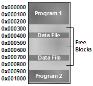

Kernel: Basic Concepts Part 1
The Kernel is the Core of all operating systems. Understanding what it is and how it effects the operating system is important.
In this tutorial, We will look at what goes behind Kernels, what they are, and what they are responsible for. Understanding these concepts is essential in coming up with a good design.
Kernel: Basic Definition
In order to understand what an OS Kernel is, we need to first understand what a "kernel" is at it's basic definitions. Dictionaries define "kernel" as "core", "essential part", or even "The body of something". When applying this definition to an Operating System environment, we can easily state that:
The Kernel is the core component of an operating system.
Okay, but what does this mean for us? What exactly is an OS Kernel, and why should we care for it?
There is no rule that states a kernel is mandatory. We can easily just load and execute programs at specific addresses without any "kernel". In fact, all of the early computer systems started this way. Some modern systems also use this. A notable example of this are the early console video game systems, which required rebooting the system in order to execute one of the games designed for that console.
So, what is the point of a Kernel? In a computing environment, it is impractical to restart every time to execute a program. This will means that each program itself would need its own bootloaders and direct hardware controlling. After all, if the programs need to be executed at bootup, there would be no such thing as an operating system.
What we need is an abstraction layer to provide the capability of executing multiple programs, and manage their memory allocations. It also can provide an abstraction to the hardware, which will not be possible if each program had to start on bootup without an OS. After all, the software will be running on raw hardware.
The keyword here is Abstraction. Lets look closer...
The need for Kernels
The Kernel provides the primary abstraction layer to the hardware itself. The Kernel is usually at Ring 0 because of this very reason: It has direct control over every little thing. Because we are still at Ring 0, we already experienced this.
This is good--but what about other software? Remember that we are developing an operating environment? Our primary goal is providing a safe, and effective environment for applications and other software to execute. If we let all software to run at Ring 0, alongside the Kernel, there would be no need for a kernel, would there be? If there was, The ring 0 software may conflict with the ring 0 Kernel, causing unpredictable results. After all, they all have complete control over every byte in the system. Any software can overwrite the kernel, or any other software without any problems. Ouch.
Yet, that is only the beginning of the problems. It is impossible to have multitasking, or multiprocessing as there is no common ground to switch between programs and processes. Only one program can execute at a time.
The basic idea is that a Kernel is a necessity. Not only do we want to prevent other software direct control over everything, but we want to create an abstraction layer for it.
Understanding where and how the Kernel fits in with the rest of the system is very important.
Abstraction Layers of Software
Software has a lot of abstractions. All of these abstractions is meant to provide a core and basic interfaces to not only hide implementation detail, but to shield you from it. Having direct control over everything might seem cool--but imagine how much problems would be caused by doing this.
You might be curious as of what problems I am referring to. Remember that, it its core, electronics does only what we tell it. We can control the software down to the hardware level, and in some cases, electronics level. Making a mistake at these levels can physically cause damage to those devices.
Lets take a look at each abstraction layer to understand what I mean, and to see where our Kernel fits in.
Relationship with PMode Protection Ring Levels
In Bootloaders 3 Tutorial, we have took a detailed look at the Rings of Assembly Language. We also looked at how this related to protected mode.
Remember that Ring 0 software has the lowest protection level. This means that we have direct control over everything, and are expected to never crash. If any Ring 0 program was to crash, it will take the system down with it (Triple Fault).
Because of this, not only do we want to shield everything else from direct control, but we want to only give software the protection level needed to run it. Because of this, normally:
- Kernels work in Ring 0 ("Supervisor Mode")
- Device Drivers work in Rings 1 and 2, as they require direct access to hardware devices
- Normal application software work in Ring 3 ("User Mode")
Okay... how does this all fit together? Lets take a closer look...
Level 1: Hardware Level
This is the actual physical component. The actual microcontroller chips on the motherboard. They send low level commands to other microcontrollers on other devices that physically control this device. How? We will look at that in Level 2.
Examples of hardware are the microcontroller chipset (The "Motherboard Chipset'), disk drives, SATA, IDE, hard drives, memory, the processor (Which is also a controller--Please see Level 2 more more information).
This is the lowest level, and the most detailed as it is pure electronics.
Level 2: Firmware Level
The Firmware sets on top of the electronics level. It contains the software needed by each hardware device and microcontroller. One example of firmware is the BIOS POST.
Remember the processor itself is nothing more then a controller--and just like other controllers, rely on its firmware. The Instruction Decoder within the processor dissects a single machine instruction into either Macrocode, or directly to Microcode.
Please see the Tutorial 7: System Architecture Tutorial for more information.
Microcode
Firmware is usually developed using microcode, and either assembled (With a microassembler) and uploaded into a storage area (Such as the BIOS POST), or hardwired into the logic circuits of the device through various of means.
Microcode is usually stored within a ROM chip, such as EEPROM.
Microcode is very hardware specific. Whenever there is a new change or revision, a new Microcode instruction set and Micro assembler needs to be developed. On some systems, Microcode has been used to control individual electronic gates and switches within the circuit. Yes, It is that low level.
Macrocode
Microcode is very low level, and can be very hard to develop with, especially in complex systems, such as a microprocessor or CPU. It also must be reimplemented whenever a change happens--Not only the code, but the Microprograms as well.
Because of this, some systems have implemented a more higher level language called Macrocode on top of Microcode. Because of this abstraction layer, Macrocode changes less frequently then that of Microcode, and is more portable. Also, do to its abstraction layer, is more easier to work with.
It is still, however, very low level. It is used as the internal logic instruction set to convert higher level machine language into Microcode--which is translated by the Instruction Decoder.
Level 3: Ring 0 - Kernel Level
This is where we are at. The Stage 2 Bootloaders only focus was to set everything up so that our Kernel has an environment to run in.
Our Kernel provides the abstraction between Device Drivers and Applications software, and the firmware that the hardware uses.
Level 4: Rings 1 and 2 - Device Drivers
Device Drivers go through the Kernel to access the hardware. Device Drivers need a lot of freedom and control because they require direct control over specific microcontrollers. Having to much control, however, can crash the system. For example, what would happen if a driver modified the GDT, or set up its own? Doing so will immediately crash the kernel. Because of this, we will want to insure these drivers cannot use LGDT to load its own GDT. This is why we want these drivers to operate at either Ring 1 or Ring 2--Not ring 0.
For an example, a Keyboard Device Driver will need to provide the interface between Applications software and the Keyboard Microcontroller. The driver may be loaded by the Kernel as a library providing the routines to indirectly access the controller.
As long as there is a standard interface used, we can provide a very portable Kernel as long as we hide all hardware dependencies.
Level 5: Ring 3 - Applications Level
This is where the software are at. They use the interfaces provided by the System API and Device Driver interfaces. Normally they do not access the Kernel directly.
Conclusion (Abstraction Layers of Software)
This Series will be developing the drivers during the development of the Kernel. This will allow us to keep things object oriented, and provide abstraction layer for the Kernel.
With that in mind, notice where we are at--Level 0. All other programs rely on the Kernel. Why? Lets look at the Kernel...
The Kernel
Because the Kernel is the Core component, it needs to provide the management for everything that relies on it. The primary purpose of the Kernel is to manage system resources, and provide an interface so other programs can access these resources. In a lot of cases, the Kernel itself is unable to use the interface it provides to other resources. It has been stated that the Kernel is the most complex and difficult tasks in programming.
This implies that designing and implementing a good Kernel is very difficult.
In Tutorial 2 we took a brief look at different past operating systems. We have bolded a lot of new terms inside that tutorial--and have compiled a list of those terms at the end of the tutorial. This is where that list starts getting implemented.
Lets first look at that list again, and look at how it related to the Kernel. Everything Bolded is handled by the Kernel:
- Memory Management
- Program Management
- Multitasking
- Memory Protection
- Fixed Base Address - This was covered in Tutorial 2
- Multiuser - This is usually implemented by a shell
- Kernel - Of course
- File System
- Command Shell
- Graphical User Interface (GUI)
- Graphical Shell
- Linear Block Addressing (LBA) - This was covered in Tutorial 2
- Bootloader -Completed
Some of the above can be implemented as separate drivers, used by the Kernel. For example, Windows uses ntfs.sys as an NTFS Filesystem Driver.
This list should look familiar from Tutorial 2. We have also covered some of these terms. Lets look at the bolded terms, and see how they relate to the Kernel. We will also look at some new concepts.
Memory Management
This is quite possibly the most important part of any Kernel. And rightfully so--all programs and data require it. As you know, in the Kernel, because we are still in Supervisor Mode (Ring 0), We have direct access to every byte in memory. This is very powerful, but also produces problems, especially in a multitasking environment, where multiple programs and data require memory.
One of the primary problems we have to solve is: What do we do when we run out of memory?
Another problem is fragmentation. It is not always possible to load a file or program into a sequential area of memory. For an example, lets say we have 2 programs loaded. One at 0x0, the other at 0x900. Both of these programs requested to load files, so we load the data files:

Notice what is happening here. There is a lot of unused memory between all of these programs and files. Okay...What happens if we add a bigger file that is unable to fit in the above? This is when big problems arise with the current scheme. We cannot directly manipulate memory in any specific way, as it will corrupt the currently executing programs and loaded files.
Then there is the problems of where each program is loaded at. Each program will be required to be Position Independent or provide relocation Tables. Without this, we will not know what base address the program is supposed to be loaded at.
Lets look at these deeper. Remember the ORG directive? This directive sets the location where your program is expected to load from. By loading the program at a different location, the program will reference incorrect addresses, and will crash. We can easily test this theory. Right now, Stage2 expects to be loaded at 0x500. However, if we load it at 0x400 within Stage1 (While keeping the ORG 0x500 within Stage2), a triple fault will occur.
This adds on two new problems. How do we know where to load a program at? Considering all we have is a binary image, we cannot know. However, if we make it standard that all programs begin at the same address--lets say, 0x0, then we can know. This would work--but is impossible to implement if we plan to support multitasking. However, if we give each program there own memory space, that virtually begins at 0x0, this will work. After all, from each programs' perspective, they are all loaded at the same base address--even if they are different in the real (physical) memory.
What we need is some way to abstract the physical memory. Lets look closer.
Virtual Address Space (VAS)
A Virtual Address Space is a Program's Address Space. One needs to take note that this does not have to do with System Memory. The idea is so that each program has their own independent address space. This insures one program cannot access another program, because they are using a different address space.
Because VAS is Virtual and not directly used with the physical memory, it allows the use of other sources, such as disk drives, as if it was memory. That is, It allows us to use more memory then what is physically installed in the system.
This fixes the "Not enough memory" problem.
Also, as each program uses its own VAS, we can have each program always begin at base 0x0000:0000. This solves the relocation problems discussed earlier, as well as memory fragmentation--as we no longer need to worry about allocating continuous physical blocks of memory for each program.
Virtual Addresses are mapped by the Kernel trough the MMU. More on this a little later.
Virtual Memory: Abstract
Virtual Memory is a special Memory Addressing Scheme implemented by both the hardware and software. It allows non contiguous memory to act as if it was contiguous memory.
Virtual Memory is based off the Virtual Address Space concepts. It provides every program its own Virtual Address Space, allowing memory protection, and decreasing memory fragmentation.
Virtual Memory also provides a way to indirectly use more memory then we actually have within the system. One common way of approaching this is by using Page files, stored on a hard drive.
Virtual Memory needs to be mapped through a hardware device controller in order to work, as it is handled at the hardware level. This is normally done through the MMU, which we will look at later.
For an example of seeing virtual memory in use, lets look at it in action:

Notice what is going on here. Each memory block within the Virtual Addresses are linear. Each Memory Block is mapped to either it's location within the real physical RAM, or another device, such as a hard disk. The blocks are swapped between these devices as an as needed bases. This might seem slow, but it is very fast thanks to the MMU.
Remember: Each program will have its own Virtual Address Space--shown above. Because each address space is linear, and begins from 0x0000:00000, this immediately fixes a lot of the problems relating to memory fragmentation and program relocation issues.
Also, because Virtual Memory uses different devices in using memory blocks, it can easily manage more then the amount of memory within the system. i.e., If there is no more system memory, we can allocate blocks on the hard drive instead. If we run out of memory, we can either increase this page file on an as needed bases, or display a warning/error message,
Each memory "Block" is known as a Page, which is usually 4096 bytes in size.
Once again, we will cover everything in much detail later.
Memory Management Unit (MMU): Abstract
My, oh my, where have we heard this term before? o.0 😀
The MMU, Also known as Paged Memory Management Unit (PMMU) is a component inside the microprocessor responsible for the management of the memory requested by the CPU. It has a number of responsibilities, including Translating Virtual Addresses to Physical Addresses, Memory Protection, Cache Control, and more.
Segmentation: Abstract
Segmentation is a method of Memory Protection. In Segmentation, we only allocate a certain address space from the currently running program. This is done through the hardware registers.
Segmentation is one of the most widely used memory protection scheme. On the x86, it is usually handled by the segment registers: CS, SS, DS, and ES.
We have seen the use of this through Real Mode.
Paging: Abstract
THIS will be important to us. Paging is the process of managing program access to the virtual memory pages that are not in RAM. We will cover this a lot more later.
Program Management
THIS is where the ring levels start getting important.
As you know, Our Kernel is at Ring 0, while the applications are at Ring 3. This is good, as it prevents the applications direct access to certain system resources. This is also bad, as a lot of these resources are needed by the applications.
You might be curious on how the processor knows what ring level it is in, and how we can switch ring levels. The processor simply uses an internal flag to store the current ring level. Okay, but how does the processor know what ring to execute the code in?
This is where the GDT and LDT become important.
As you know, in Real Mode, there is no protection levels. Because of this, everything is "Ring 0". Remember that we have to set up a GDT prior to going into protected mode? Also, remember that we needed to execute a far jump to enter the 32 bit mode. Lets go over this in more detail here, as they will play very important roles here.
Supervisor Mode
Ring 0 is known as supervisor mode. It has access to every instruction, register, table, and other, more privileged resources that no other applications with higher ring levels can access.
Ring 0 is also known as Kernel level, and is expected never to fail. If a ring 0 program crashes, it will take the system down with it. Remember that: "With great power comes great responsibility". This is the primary reason for protected mode. 😉
Supervisor Mode utilizes a hardware flag that can be changed by system level software. System level software (Ring 0) will have this flag set, while application level software (Ring 3) will not.
There are a lot of things that only Ring 0 code can do, that Ring 3 code cannot. Remember the flags register from Tutorial 7? The IOPL Flag of the RFLAGS register determines what level is required to execute certain instructions, such as IN and OUT instructions. Because the IOPL is usually 0, this means that Only Ring 0 programs have direct access to hardware via software ports. Because of this, we will need to switch back to Ring 0 often.
Kernel Space
Kernel Space refers to a special region of memory that is reserved for the Kernel, and Ring 0 device drivers. In most cases, Kernel Space should never be swapped out to disk, like virtual memory.
If an operating software runs in User Space, it is often known as "Userland".
User Space
This is normally the Ring 3 application programs. Each application usually executes in its own Virtual Address Space (VAS) and can be swapped from different disk devices. Because each application is within their own virtual memory, they are unable to access another programs memory directly. Because of this, they will be required to go through a Ring 0 program to do this. This is necessary for Debuggers.
Applications are normally the least privileged. Because of this, they usually need to request support from a ring 0 Kernel level software to access system resources.
Switching Protection Levels
What we need is a way so that these applications can query the system for these resources. However, to do this, we need to be in Ring 0, Not Ring 3. Because of this, we need a way to switch the processor state from Ring 3 to Ring 0, and allow applications to query our system.
Remember back in Tutorial 5 we covered the rings of assembly language. Remember that the processor will change the current ring level under these conditions:
- A directed instruction, such as a far jump, far call, fat ret etc.
- A trap instruction, such as INT, SYSCALL, SYSEXIT, SYSENTER, SYSRETURN etc.
- Exceptions
So...In order for an application to execute a system routine (while switching to Ring 0), the application must either far jump, execute an Interrupt, or use a special instruction, such as SYSENTER.
This is great--but how does the processor know what ring level to switch into? This is where the GDT comes into play.
Remember that, in each descriptor of the GDT, we had to set up the Ring Level for each descriptor? In our current GDT, We have 2 descriptors: Each for Kernel Mode Ring 0. This is our Kernel Space.
All we need to do is to add 2 mode descriptors to our current GDT, but set for Ring 3 access. This is our User Space.
Lets take a closer look.
Remember from tutorial 8 that the important byte here is the access byte!. Because of this, here is the byte pattern again:
- Bit 0 (Bit 40 in GDT): Access bit (Used with Virtual Memory). Because we don't use virtual memory (Yet, anyway), we will ignore it. Hence, it is 0
- Bit 1 (Bit 41 in GDT): is the readable/writable bit. Its set (for code selector), so we can read and execute data in the segment (From 0x0 through 0xFFFF) as code
- Bit 2 (Bit 42 in GDT): is the "expansion direction" bit. We will look more at this later. For now, ignore it.
- Bit 3 (Bit 43 in GDT): tells the processor this is a code or data descriptor. (It is set, so we have a code descriptor)
- Bit 4 (Bit 44 in GDT): Represents this as a "system" or "code/data" descriptor. This is a code selector, so the bit is set to 1.
- Bits 5-6 (Bits 45-46 in GDT): is the privilege level (i.e., Ring 0 or Ring 3). We are in ring 0, so both bits are 0.
- Bit 7 (Bit 47 in GDT): Used to indicate the segment is in memory (Used with virtual memory). Set to zero for now, since we are not using virtual memory yet
;*******************************************
; Global Descriptor Table (GDT)
;*******************************************
gdt_data:
; Null descriptor (Offset: 0x0)--Remember each descriptor is 8 bytes!
dd 0 ; null descriptor
dd 0
; Kernel Space code (Offset: 0x8 bytes)
dw 0FFFFh ; limit low
dw 0 ; base low
db 0 ; base middle
db 10011010b ; access - Notice that bits 5 and 6 (privilege level) are 0 for Ring 0
db 11001111b ; granularity
db 0 ; base high
; Kernel Space data (Offset: 16 (0x10) bytes
dw 0FFFFh ; limit low (Same as code)10:56 AM 7/8/2007
dw 0 ; base low
db 0 ; base middle
db 10010010b ; access - Notice that bits 5 and 6 (privilege level) are 0 for Ring 0
db 11001111b ; granularity
db 0 ; base high
; User Space code (Offset: 24 (0x18) bytes)
dw 0FFFFh ; limit low
dw 0 ; base low
db 0 ; base middle
db 11111010b ; access - Notice that bits 5 and 6 (privilege level) are 11b for Ring 3
db 11001111b ; granularity
db 0 ; base high
; User Space data (Offset: 32 (0x20) bytes
dw 0FFFFh ; limit low (Same as code)10:56 AM 7/8/2007
dw 0 ; base low
db 0 ; base middle
db 11110010b ; access - Notice that bits 5 and 6 (privilege level) are 11b for Ring 3
db 11001111b ; granularity
db 0 ; base high
Notice what is happening here. All code and data have the same range values--the only difference is that of the Ring levels.
As you know, protected mode uses CS to store the Current Privilege Level (CPL). When entering protected mode for the first time, We needed to switch to Ring 0. Because the value of CS was invalid (From real mode), we need to choose the correct descriptor from the GDT into CS. Please see Tutorial 8 for more information.
This required a far jump, as we needed to upload a new value into CS. By far jumping to a Ring 3 descriptor, we can effectively enter a Ring 3 state.
As, as you know, we can use a INT, SYSCALL/SYSEXIT/SYSENTER/SYSRET, far call, or an exception to have the processor switch back to Ring 0.
Lets take a look closer at these methods...
System API: Abstract
The program relies on the System API to access system resources. Most applications reference the System API directly, or through their language API--Such as the C runtime library.
The System API provides the Interface between applications and system resources through System Calls.
Interrupts
A Software Interrupt is a special type of interrupt implemented in software. Interrupts are used quite often, and rely on the use of a special table--the Interrupt Descriptor Table (IDT). We will look at Interrupts a lot more closer later, as it is the first thing we will implement in our Kernel.
Linux uses INT 0x80 for all system calls.
Interrupts are the most portable way to implement system calls. Because of this, we will be using interrupts as the first way of invoking a system routine.
Call Gates
Call Gates provide a way for Ring 3 applications to execute more privileged (Ring 0,1,2) code. The Call gate interfaces between the Ring 0 routines and the Ring 3 applications, and is normally set up by the Kernel.
Call Gates provide a single gate (Entry point) to FAR CALL. This entry point is defined within the GDT or LDT.
It is much easier to understand a call gate with an example.
;*******************************************
; Global Descriptor Table (GDT)
;*******************************************
gdt_data:
; Null descriptor (Offset: 0x0)--Remember each descriptor is 8 bytes!
dd 0 ; null descriptor
dd 0
; Kernel Space code (Offset: 0x8 bytes)
dw 0FFFFh ; limit low
dw 0 ; base low
db 0 ; base middle
db 10011010b ; access - Notice that bits 5 and 6 (privilege level) are 0 for Ring 0
db 11001111b ; granularity
db 0 ; base high
; Kernel Space data (Offset: 16 (0x10) bytes
dw 0FFFFh ; limit low (Same as code)10:56 AM 7/8/2007
dw 0 ; base low
db 0 ; base middle
db 10010010b ; access - Notice that bits 5 and 6 (privilege level) are 0 for Ring 0
db 11001111b ; granularity
db 0 ; base high
; Call gate (Offset: 24 (0x18) bytes
CallGate1:
dw (Gate1 & 0xFFFF) ; limit low address of gate routine
dw 0x8 ; code segment selector
db 0 ; base middle
db 11101100b ; access - Notice that bits 5 and 6 (privilege level) are 11 for Ring 3
db 0 ; granularity
db (Gate1 >> 16) ; base high of gate routine
; End of the GDT. Define the routine wherever
; The call gate routine
Gate1:
; do something special here at Ring 3
retf ; far return back to calling routine
The above is an example of a call gate.
To execute the call gate, we offset from the descriptor code within the GDT. Notice how similar this is from our jmp 0x8:Stage2 instruction:
; execute the call gate
call far 0x18:0 ; far call--calls our Gate1 routine
Call Gates are not used too often in modern operating systems. One of the reasons is that most architectures do not support Call Gates. They are also quite slow as they require a FAR CALL and FAR RET instructions.
On systems where the GDT is not in protected memory, it is also possible for other programs to create their own Call Gates to raise its protection level (and get Ring 0 access.) They have also been known to have security issues. One notable worm, for example, is Gurong, which installs its own call gate in the Windows Operating System.
SYSENTER / SYSEXIT Instructions
These instructions were introduced from the Pentium II and later CPUs. Some recent AMD processors also support these instructions.
SYSENTER can be executed by any application. SYSRET can only be executed by Ring 0 programs.
These instructions are used as a fast way to transfer control from a User Mode (Ring 3) to a Privilege Mode (Ring 0), and back quickly. This allows a fast and safe way to execute system routines from user mode.
These instructions directly rely on the Model Specific Registers (MSR's). Please see Tutorial 7 for an explanation of MSRs, and the RDMSR and WRMSR instructions.
SYSENTER
The SYSENTER instruction automatically sets the following registers to their locations defined within the MSR:
- CS = IA32_SYSENTER_CS MSR + the value 8
- ESP = IA32_SYSENTER_ESP MSR
- EIP = IA32_SYSENTER_IP MSR
- SS = IA32_SYSENTER_SS MSR
This instruction is only used to transfer control from a Ring 3 code to Ring 0. At startup, we will need to set these MSR's to point to a Starting location which will be our Syscall Entry Point for all system calls.
Lets take a look at SYSEXIT.
SYSEXIT
The SYSEXIT instruction automatically sets the following registers to their locations defined within the MSR:
- CS = IA32_SYSENTER_CS MSR + the value 16
- ESP = ECX Register
- EIP = EDX Register
- SS = IA32_SYSENTER_CS MSR MSR + 24
Using SYSENTER/SYSEXIT
Okay, using these instructions might seem complicated, but they are not too hard 😉
Because SYSENTER and SYSEXIT require that the MSR's are set up prior to calling them, we first need to initialize those MSRs.
Remember that IA32_SYSENTER_CS is index 0x174, IA32_SYSENTER_ESP is 0x175, and IA32_SYSENTER_IP is 0x176 within the MSR. Remember from tutorial 7?
Knowing this, lets set them up for SYSENTER:
%define IA32_SYSENTER_CS 0x174
%define IA32_SYSENTER_ESP 0x175
%define IA32_SYSENTER_EIP 0x176
mov eax, 0x8 ; kernel code descriptor
mov edx, 0
mov ecx, IA32_SYSENTER_CS
wrmsr
mov eax, esp
mov edx, 0
mov ecx, IA32_SYSENTER_ESP
wrmsr
mov eax, Sysenter_Entry
mov edx, 0
mov ecx, IA32_SYSENTER_EIP
wrmsr
; Now, we can use sysenter to execute Sysenter_Entry at ring 0 from either a Ring 0 program or Ring 3:
sysenter
Sysenter_Entry:
; sysenter jumps here, is is executing this code at privilege level 0\. Similar to Call Gates, normally we will
; provide a single entry point for all system calls.
If the code that executes sysenter is at Ring 3, and Sysenter_Entry is at protection level 0, the processor will switch modes within the SYSENTER instruction.
in the above code, both are at Protection Level 0, so the processor will just call the routine without changing modes.
As you can see, there is a bit of work that must be done prior to calling SYSENTER.\ and SYSEXIT.
SYSENTER and SYSEEXIT are not portable. Because of this, it is wise to implement another, more portable, method alongside SYSENTER/SYSEXIT.
SYSCALL / SYSRET Instructions
[I plan on adding a section for SYSCALL and SYSRET here soon]
Error Handling
What do we do if a program causes a problem? How will we know what that problem is and how to handle it?
Normally this is done by means of Exception Handling. Whenever the processor enters an invalid state caused by an invalid instruction, divide by 0, etc; the processor triggers an Interrupt Service Routine (ISR). If you have mapped our own ISR's, it will call our routines.
The ISR called depends on what the problem was. This is great, as we know what the problem is, and can try finding the program that originally caused the problem.
One way of doing this is simply getting the last program that you have given processor time to. That is guaranteed to be the one that has generated the ISR.
Once you have the programs information, then one can either output an error or attempt to shutdown the program.
IRQs are mapped by the internal Programmable Interrupt Controller (PIC) inside the processor. They are mapped to interrupt entries within the Interrupt Descriptor Table (IDT). This is the first thing we will work on inside the Kernel, so we will cover everything later.
Conclusion
We looked at a lot of different concepts in this tutorial, ranging from Kernel theory, memory management concepts, Virtual Memory Addressing (VMA), and program management, including separating Ring 0 from Ring 3, and providing the interface between applications and system software. Whew! That's a lot, don't you think?
a lot of the concepts in this tutorial may be new to you--don't worry. This is more of a "Get your feet wet" tutorial, where we cover all of the basic concepts related to Kernels.
This tutorial has barely scratched the surface of what a Kernel must do. That is a start, though. 😉
In the next tutorial, we are going to look at Kernels from another perspective. We will cover some new concepts yet again, and talk about Kernel designs and implementations. Afterwards, we will start building our compilers and toolchains to work with C and C++. Sound fun?
I am currently using MSVC++ 2005 for my Kernel.
We will also finish off other concepts that we have not looked at here, including multitasking, TSS, Filesystems, and more. Its going to be fun 😉